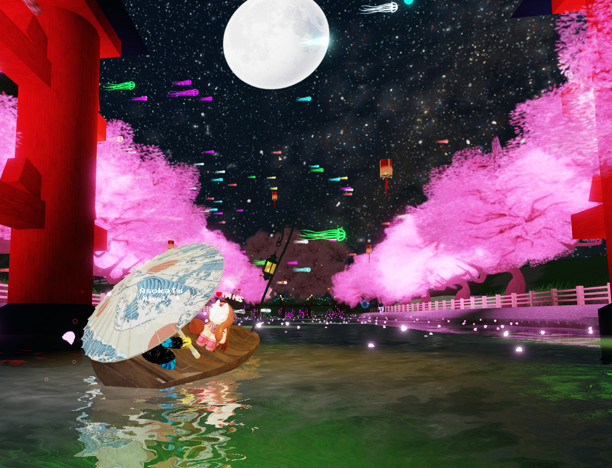

Piensa en todo lo que hemos vivido y compartido, incluso las discusiones XD... Amor, pachoncita, cada estrella que veas en el cielo es un te amo y un pensamiento que mi fuerza interior expulsa de tanto amor y cariño que te tengo, espero nunca te haga falta y si llegas a extrañarme pienses en mi de una forma bonita, tienes mi numero, discord, spotify, roblox, te estas tardando en buscarme y si es que no puedes, por favor escucha todos los audios que te he mandado, todo el amor que te he mandado y ve las fotos que tenemos, aun que sea en roblox, pero nunca me olvides.
Jamas olvides que tu siempre me haras falta y jamas estare bien estando sin ti.
⬅️ Volver